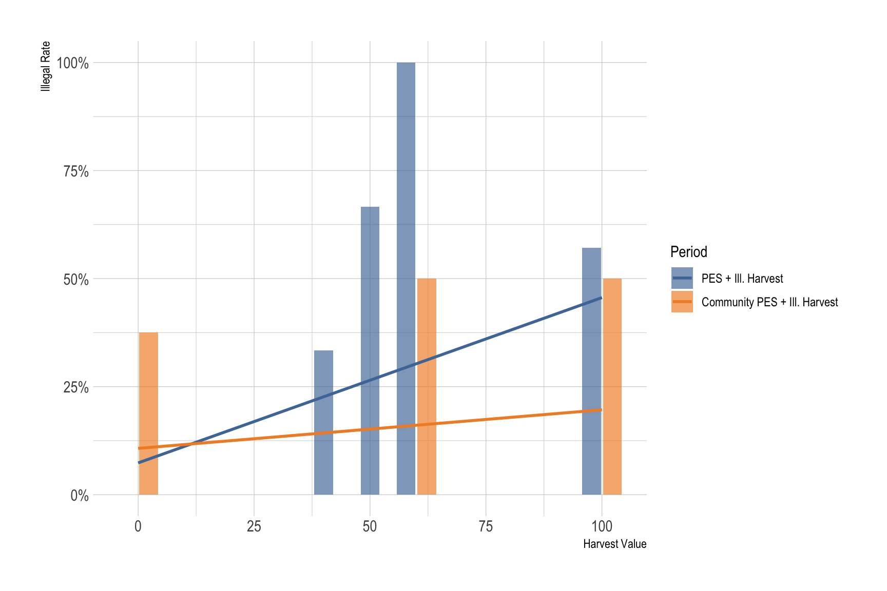
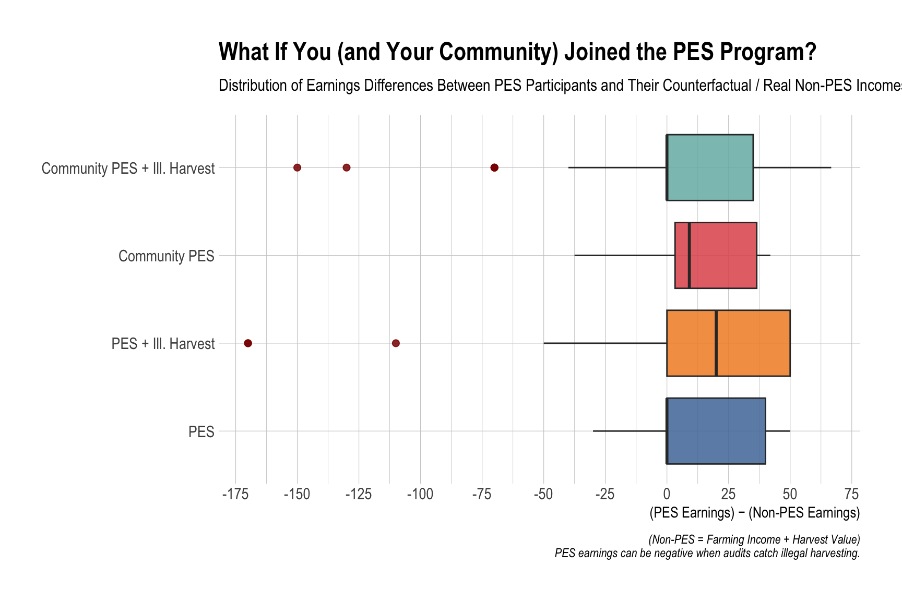
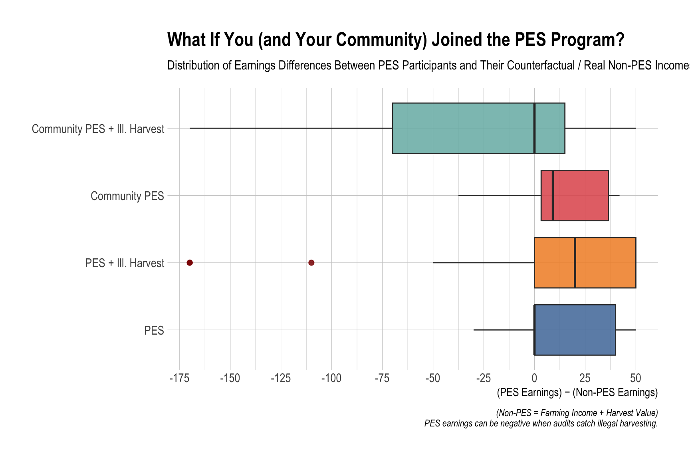
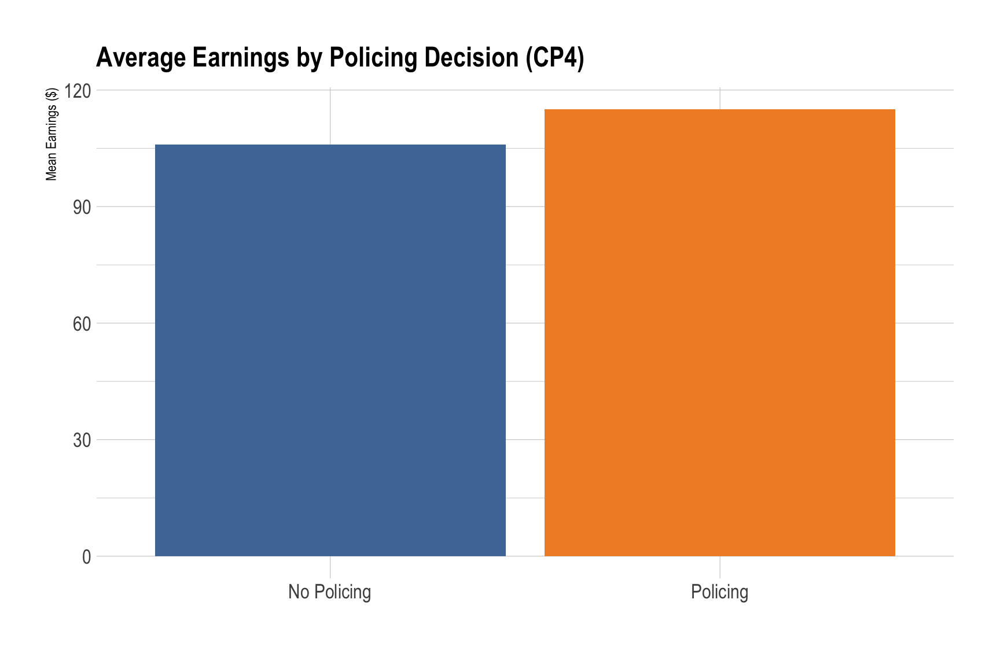
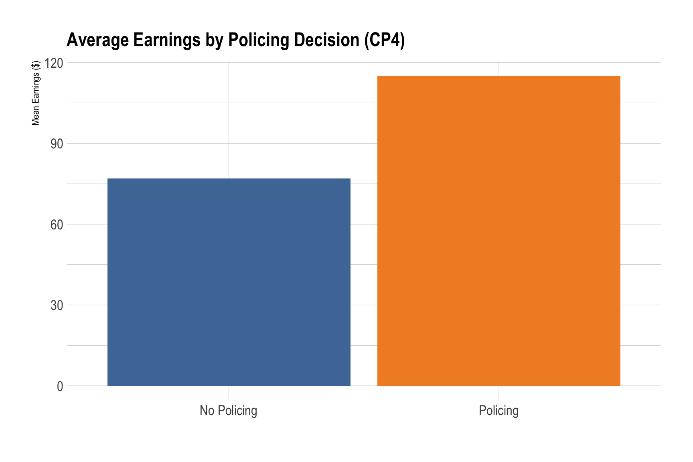

Code
df_0 <- read_csv("https://bcdanl.github.io/data/econ-340-redd-exp-cp0-2025-1006.csv")
df_0 |>
datatable()REDD+ Experiment — Money Growing on Trees
You are a household in the beautiful but low-income tropical country of Ephoria.
You live in a rural area on the margin of a forest. Over the last few decades, expansion of agriculture and urban areas has reduced forest cover and put pressure on local resources.
Your small, traditional community survives mainly through:

Tropical forest ecosystem

Forest degradation from wood harvesting
Wood is used for cooking and heating, but contributes to deforestation and climate change.
If you don’t harvest wood, you must either do without or buy replacement goods on the market.
Each participant receives a playing card:
Harvest values differ because of variations in household needs, family size, and access to forest areas.
To fight deforestation and raise revenue, Ephoria’s policymakers are experimenting with Payments for Ecosystem Services (PES) through an international REDD+ program.
You will play through several contract periods, each representing a different policy environment.
To make decisions realistic, two random participants will be selected at the end of the experiment to receive real payments based on their total earnings across all rounds:
\[ \text{Real Payment} = \frac{\text{Total Experimental Earnings}}{100} \]
Typically, this amounts to about $3–$9 per winner.
\[ (\text{Earnings}) = (\text{Farming Income}) + (\text{PES Payment}) + (\text{Forest Harvesting}) - (\text{Policing or Fines}) \]
Farming income of $70 is automatically granted to every household each period.
| Component | Description | Default Value |
|---|---|---|
| Farming Income | Automatic subsistence income from your land plot | $70 |
| PES Payment | Payment for entering PES contract | $50 |
| Forest Harvesting | $10 × card number (if not in PES) | varies |
If total earnings < $75, your family cannot eat for a day (conceptually unpleasant!).
| Period | Policy Context | Key Feature |
|---|---|---|
| 0 | Baseline | No PES (individual harvest only) |
| 1 | PES | Legal PES contracts only |
| 2 | PES + Illegal Harvest | Can cheat; subject to random audit |
| 3 | Community PES | Group decision and shared payment |
| 4 | Community + Illegal Harvest | Group and individual enforcement |
df_0 <- read_csv("https://bcdanl.github.io/data/econ-340-redd-exp-cp0-2025-1006.csv")
df_0 |>
datatable()df_1 <- read_csv("https://bcdanl.github.io/data/econ-340-redd-exp-cp1-2025-1006.csv")
df_1 |>
datatable()df_2 <- read_csv("https://bcdanl.github.io/data/econ-340-redd-exp-cp2-2025-1006.csv")
df_2 |>
datatable()df_3 <- read_csv("https://bcdanl.github.io/data/econ-340-redd-exp-cp3-2025-1006.csv") |> relocate(community, .after = 2)
df_3 |>
datatable()df_4 <- read_csv("https://bcdanl.github.io/data/econ-340-redd-exp-cp4-2025-1006.csv") |> relocate(community, .after = 2)
df_4 |>
datatable()We compute earnings using the rules defined for each period.
(Recall: Earnings = Farming Income + PES Payments + Harvest − Fines/Policing.)
df_0 <- df_0 |>
mutate(
period = "Baseline",
harvest = ifelse(harvest == "No", 0, 1),
earning = 70 + harvest_value * harvest
) |>
relocate(earning, .after = `submission-time`)df_1 <- df_1 |>
mutate(
period = "PES",
pes_payment = 50 * pes,
harvest_payment = harvest_value * (1 - pes),
earning = 70 + pes_payment + harvest_payment
) |>
relocate(earning, .after = `submission-time`)If audited and cheating: lose PES (50), lose illegal harvest, pay $70 fine.
df_2 <- df_2 |>
mutate(
period = "PES + Ill. Harvest",
pes_payment = 50 * pes,
harvest_payment = harvest_value * (1 - pes),
# audit draw only for PES participants
fine = ifelse(pes == 1, rbinom(n(), 1, 0.25), 0),
base_earn = 70 + pes_payment + harvest_payment + illegal * harvest_value,
penalty = ifelse(fine == 1 & pes == 1 & illegal == 1, 50 + harvest_value + 70, 0),
earning = base_earn - penalty
) |>
relocate(earning, .after = `submission-time`)Each community that joins PES has a total of $50 × (# members) to divide by the chosen split rule.
df_3 <- df_3 |>
mutate(
period = "Community PES",
pes = ifelse(pes_group == "PES", 1, 0),
pes_payment = 50 * pes,
harvest_payment = harvest_value * (1 - pes)
) |>
group_by(community) |>
mutate(
additional = case_when(
pes == 0 ~ 0,
split_rule == "equal" ~ pes_payment,
split_rule == "proportional_card" ~ (harvest_value + 10) * pes_payment * n() / sum(harvest_value + 10),
split_rule == "floor_plus_proportional" ~ 0.75 * pes_payment + 0.25 * (harvest_value + 10) * pes_payment * n() / sum(harvest_value + 10),
split_rule == "floor_plus_needs" ~ 0.75 * pes_payment + 0.25 * (1/(harvest_value + 10)) * pes_payment * n() / sum(1/(harvest_value + 10)),
is.na(split_rule) | split_rule == "no_PES" ~ 0,
TRUE ~ 0
)
) |>
ungroup() |>
mutate(
earning = round(70 + harvest_payment + additional, 2)
) |>
relocate(earning, .after = `submission-time`)Two randomizations (v1, v2) illustrate different audit outcomes.
# --- Version 1 (seed = 2) ---
set.seed(2)
df_4_v1 <- df_4 |>
mutate(
period = "Community PES + Ill. Harvest",
pes = ifelse(pes_group == "PES", 1, 0),
pes_payment = 50 * pes,
harvest_payment = harvest_value * (1 - pes)
) |>
group_by(community) |>
mutate(
illegal_n = sum(illegal),
audit_prob = pmin(0.1 * illegal_n, 1),
audit_draw = ifelse(pes == 1 & police == 0, rbinom(n(), 1, audit_prob), 0),
audit = ifelse(sum(audit_draw) > 0, 1, 0),
additional = case_when(
pes == 0 ~ 0,
pes == 1 & police == 1 & split_rule %in% c("equal","compliers_only_equal","remove_benefits_illegal_equal") ~ pes_payment,
pes == 1 & police == 1 & split_rule == "remove_benefits_illegal_proportional" ~ pes_payment * (harvest_value+10)/sum(harvest_value+10),
audit == 0 & pes == 1 & police == 0 & split_rule == "equal" ~ pes_payment,
audit == 0 & pes == 1 & police == 0 & split_rule == "compliers_only_equal" ~ ifelse(illegal==0, pes_payment, 0),
audit == 0 & pes == 1 & police == 0 & split_rule == "remove_benefits_illegal_equal" ~ ifelse(illegal==0, pes_payment*n()/(n()-illegal_n), 0),
audit == 0 & pes == 1 & police == 0 & split_rule == "remove_benefits_illegal_proportional" ~ ifelse(illegal==0, pes_payment*(harvest_value+10)*n()/sum((harvest_value+10)*(1-illegal)), 0),
audit == 1 & pes == 1 & police == 0 & split_rule == "equal" ~ pes_payment,
audit == 1 & pes == 1 & police == 0 & split_rule == "compliers_only_equal" ~ ifelse(illegal==0, pes_payment, -(illegal*harvest_value) - 70),
audit == 1 & pes == 1 & police == 0 & split_rule == "remove_benefits_illegal_equal" ~ ifelse(illegal==0, pes_payment*n()/(n()-illegal_n), -(illegal*harvest_value) - 70),
audit == 1 & pes == 1 & police == 0 & split_rule == "remove_benefits_illegal_proportional" ~ ifelse(illegal==0, pes_payment*(harvest_value+10)*n()/sum((harvest_value+10)*(1-illegal)), -(illegal*harvest_value) - 70),
is.na(split_rule) | split_rule == "no_PES" ~ 0,
TRUE ~ 0
)
) |>
ungroup() |>
mutate(
earning = round(70 + harvest_payment + additional + illegal*harvest_value - 5*police, 2),
earning = ifelse(audit == 1, 0, earning)
) |>
relocate(earning, .after = `submission-time`)
# --- Version 2 (seed = 1) for sensitivity ---
set.seed(1)
df_4_v2 <- df_4_v1 |>
select(-earning, -audit_draw, -audit, -additional) |>
group_by(community) |>
mutate(
illegal_n = sum(illegal),
audit_prob = pmin(0.1 * illegal_n, 1),
audit_draw = ifelse(pes == 1 & police == 0, rbinom(n(), 1, audit_prob), 0),
audit = ifelse(sum(audit_draw) > 0, 1, 0),
additional = case_when(
pes == 0 ~ 0,
pes == 1 & police == 1 & split_rule %in% c("equal","compliers_only_equal","remove_benefits_illegal_equal") ~ pes_payment,
pes == 1 & police == 1 & split_rule == "remove_benefits_illegal_proportional" ~ pes_payment * (harvest_value+10)/sum(harvest_value+10),
audit == 0 & pes == 1 & police == 0 & split_rule == "equal" ~ pes_payment,
audit == 0 & pes == 1 & police == 0 & split_rule == "compliers_only_equal" ~ ifelse(illegal==0, pes_payment, 0),
audit == 0 & pes == 1 & police == 0 & split_rule == "remove_benefits_illegal_equal" ~ ifelse(illegal==0, pes_payment*n()/(n()-illegal_n), 0),
audit == 0 & pes == 1 & police == 0 & split_rule == "remove_benefits_illegal_proportional" ~ ifelse(illegal==0, pes_payment*(harvest_value+10)*n()/sum((harvest_value+10)*(1-illegal)), 0),
audit == 1 & pes == 1 & police == 0 & split_rule == "equal" ~ pes_payment,
audit == 1 & pes == 1 & police == 0 & split_rule == "compliers_only_equal" ~ ifelse(illegal==0, pes_payment, -(illegal*harvest_value) - 70),
audit == 1 & pes == 1 & police == 0 & split_rule == "remove_benefits_illegal_equal" ~ ifelse(illegal==0, pes_payment*n()/(n()-illegal_n), -(illegal*harvest_value) - 70),
audit == 1 & pes == 1 & police == 0 & split_rule == "remove_benefits_illegal_proportional" ~ ifelse(illegal==0, pes_payment*(harvest_value+10)*n()/sum((harvest_value+10)*(1-illegal)), -(illegal*harvest_value) - 70),
is.na(split_rule) | split_rule == "no_PES" ~ 0,
TRUE ~ 0
)
) |>
ungroup() |>
mutate(
earning = round(70 + harvest_payment + additional + illegal*harvest_value - 5*police, 2),
earning = ifelse(audit == 1, 0, earning)
)all_cp <- bind_rows(df_0, df_1, df_2, df_3, df_4_v1) |>
mutate(
diff = earning - (70 + harvest_value), # PES vs counterfactual non-PES
period = factor(period,
levels = c("Baseline", "PES", "PES + Ill. Harvest",
"Community PES", "Community PES + Ill. Harvest"))
)
all_cp_v2 <- bind_rows(df_0, df_1, df_2, df_3, df_4_v2) |>
mutate(
diff = earning - (70 + harvest_value),
period = factor(period,
levels = c("Baseline", "PES", "PES + Ill. Harvest",
"Community PES", "Community PES + Ill. Harvest"))
)Higher harvest values imply a greater opportunity cost of conservation, leading to higher illegal harvest rates. However, this relationship weakens under community PES, as the consequences of punishment extend to other community members.
all_cp |>
filter(period %in% c("PES + Ill. Harvest","Community PES + Ill. Harvest"),
!is.na(harvest_value)) |>
group_by(period, harvest_value) |>
summarise(illegal_rate = mean(illegal %in% TRUE, na.rm = TRUE),
n = n(), .groups="drop") |>
ggplot(aes(x = harvest_value, y = illegal_rate)) +
geom_col(aes(fill = period), position = position_dodge2(preserve = "single"), alpha = .67) +
geom_smooth(method = lm, se = FALSE, aes(color = period)) +
scale_color_tableau() + scale_fill_tableau() +
scale_y_continuous(labels = scales::percent) +
labs(x = "Harvest Value", y = "Illegal Rate", fill = "Period", color = "Period") +
theme_ipsum()
Right of zero = PES helped vs. your non-PES counterfactual.
Left of zero = PES hurt, often due to audits of illegal harvest.
For this version below, only one community was audited in CP4 (Community PES + Illegal Harvest).
all_cp |>
filter(period != "Baseline") |>
ggplot(aes(y = period, x = diff, fill = period)) +
geom_boxplot(alpha = 0.85, outlier.colour = 'darkred', outlier.size = rel(2)) +
scale_fill_tableau() +
scale_x_continuous(breaks = seq(-175, 75, 25)) +
labs(
title = "What If You (and Your Community) Joined the PES Program?",
subtitle = "Distribution of Earnings Differences Between PES Participants and Their Counterfactual / Real Non-PES Incomes",
x = "(PES Earnings) − (Non-PES Earnings)", y = NULL,
caption = "(Non-PES = Farming Income + Harvest Value)\nPES earnings can be negative when audits catch illegal harvesting."
) +
theme(legend.position = "none")
For this version below, two communities were audited in CP4.
all_cp_v2 |>
filter(period != "Baseline") |>
ggplot(aes(y = period, x = diff, fill = period)) +
geom_boxplot(alpha = 0.85, outlier.colour = 'darkred', outlier.size = rel(2)) +
scale_fill_tableau() +
scale_x_continuous(breaks = seq(-175, 75, 25)) +
labs(
title = "What If You (and Your Community) Joined the PES Program?",
subtitle = "Distribution of Earnings Differences Between PES Participants and Their Counterfactual / Real Non-PES Incomes",
x = "(PES Earnings) − (Non-PES Earnings)", y = NULL,
caption = "(Non-PES = Farming Income + Harvest Value)\nPES earnings can be negative when audits catch illegal harvesting."
) +
theme(legend.position = "none")
For this version below, only one community was audited in CP4.
all_cp |>
filter(period == "Community PES + Ill. Harvest") |>
mutate(police = ifelse(police == 0, "No Policing", "Policing")) |>
group_by(police) |>
summarise(mean_earning = mean(earning, na.rm = TRUE),
median_earning = median(earning, na.rm = TRUE)) |>
ggplot(aes(x = factor(police), y = mean_earning, fill = factor(police))) +
geom_col() +
labs(
title = "Average Earnings by Policing Decision (CP4)",
x = "",
y = "Mean Earnings ($)",
color = "Period"
) +
scale_fill_tableau() +
theme_ipsum(base_size = 13) +
theme(legend.position = "none")
For this version below, two communities were audited in CP4.
# Community Policing Impact - v2
# More community gets audited
all_cp_v2 |>
filter(period == "Community PES + Ill. Harvest") |>
mutate(police = ifelse(police == 0, "No Policing", "Policing")) |>
group_by(police) |>
summarise(mean_earning = mean(earning, na.rm = TRUE),
median_earning = median(earning, na.rm = TRUE)) |>
ggplot(aes(x = factor(police), y = mean_earning, fill = factor(police))) +
geom_col() +
labs(
title = "Average Earnings by Policing Decision (CP4)",
x = "",
y = "Mean Earnings ($)",
color = "Period"
) +
scale_fill_tableau() +
theme_ipsum(base_size = 13) +
theme(legend.position = "none")
Policing governance was effective in preventing illegal harvesting.
Below, click column headers to sort; use the search boxes to filter.
What to look for: Which communities joined PES more? Did policing correlate with higher average earnings?
comm_summary <- all_cp |>
filter(period %in% c("Community PES", "Community PES + Ill. Harvest")) |>
group_by(period, community) |>
summarise(
n = n(),
mean_earning = round(mean(earning, na.rm = TRUE), 2),
median_earning = round(median(earning, na.rm = TRUE), 2),
pes_rate = round(mean(pes, na.rm = TRUE), 3),
illegal_rate = round(mean(illegal, na.rm = TRUE), 3),
policing_rate = round(mean(police, na.rm = TRUE), 3),
harvest_value = round(mean(harvest_value, na.rm = TRUE), 2),
.groups = "drop"
)
DT::datatable(comm_summary, rownames = FALSE,
options = list(pageLength = nrow(comm_summary), scrollX = TRUE))What to look for: Did groups favor equal, proportional, or floor + top-up rules?
df_rules <- all_cp |>
ungroup() |>
select(-`id-number`) |>
filter(period %in% c("Community PES", "Community PES + Ill. Harvest"),
!is.na(split_rule)) |>
select(period, community, split_rule) |>
distinct() |>
count(period, split_rule) |>
group_by(period) |>
mutate(pct = round(100 * n / sum(n), 1)) |>
arrange(period, desc(n)) |>
ungroup()
DT::datatable(df_rules, rownames = FALSE,
options = list(pageLength = 10, scrollX = TRUE))What to look for: Do high-card players dominate, or do PES/policing strategies change the leaderboard?
totals <- all_cp |>
group_by(`id-number`) |>
summarise(total_earning = sum(earning, na.rm = TRUE), .groups = "drop") |>
arrange(desc(total_earning)) |>
mutate(rank = row_number()) |>
mutate(total_earning = round(total_earning, 2))
DT::datatable(bind_rows(
head(totals, 5) |> mutate(group = "Top 5"),
tail(totals, 5) |> mutate(group = "Bottom 5")
) |>
relocate(group),
rownames = FALSE,
options = list(pageLength = 10, scrollX = TRUE))Real payout = Total experimental earnings / 100 (per winner).
lottery_pool <- all_cp |>
group_by(`id-number`) |>
summarise(real_earning = round(sum(earning, na.rm = T) / 100, 2),
.groups = "drop")
set.seed(1)
winners <- slice_sample(lottery_pool, n = 2)
DT::datatable(winners, rownames = FALSE,
options = list(dom = 't', paging = FALSE))| CP | Conditions | PES / Harvest? | Illegal Harvest? | Audited? | A: Farming | B: PES | C: Harvest | D: Fines | Earnings = A + C |
|---|---|---|---|---|---|---|---|---|---|
| 0 | Baseline | Harvest / No | $70 | $ |
| CP | Conditions | PES / Harvest? | Illegal Harvest? | Audited? | A: Farming | B: PES | C: Harvest | D: Fines | Earnings = A + B + C |
|---|---|---|---|---|---|---|---|---|---|
| 1 | PES | PES / No | $70 | $ | $ |
| CP | Conditions | PES / Harvest? | Illegal Harvest? | Audited? | A: Farming | B: PES | C: Harvest | D: Fines | Earnings = A + B + C – D |
|---|---|---|---|---|---|---|---|---|---|
| 2 | Illegal Harvest | PES / No | Y / N | Y / N | $70 | $ | $ | $ |
| CP | Conditions | PES / Harvest? | Illegal Harvest? | Audited? | A: Farming | B: PES | C: Harvest | D: Fines | Earnings = A + B + C |
|---|---|---|---|---|---|---|---|---|---|
| 3 | Community | PES / No | $70 | $ | $ |
| CP | Conditions | PES / Harvest? | Illegal Harvest? | Audited? | A: Farming | B: PES | C: Harvest | D: Fines/Policing | Earnings = A + B + C – D |
|---|---|---|---|---|---|---|---|---|---|
| 4 | Comm + Illegal Harvest | PES / No | Y / N | Y / N | $70 | $ | $ | $ |
| CP | Conditions | PES / Harvest? | Illegal Harvest? | Audited? | A: Farming | B: PES | C: Harvest | D: Fines | Earnings = A + B + C – D |
|---|---|---|---|---|---|---|---|---|---|
| 0 | Baseline | Harvest / No | $70 | ||||||
| 1 | PES | PES / No | $70 | $ | $ | $ | |||
| 2 | Illegal Harvest | PES / No | Y / N | Y / N | $70 | $ | $ | $ | |
| 3 | Community | PES / No | $70 | $ | $ | $ | |||
| 4 | Comm + Illegal Harvest | PES / No | Y / N | Y / N | $70 | $ | $ | $ | |
| TOTAL | $ |
Note: If you illegally harvest and are audited, cross out columns B and C for that round – both become zero.